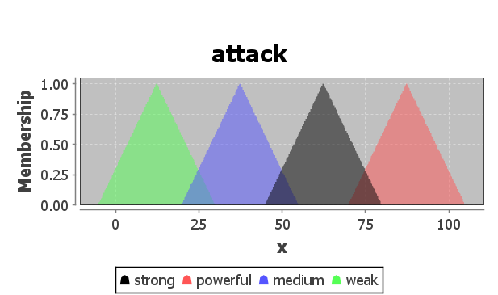
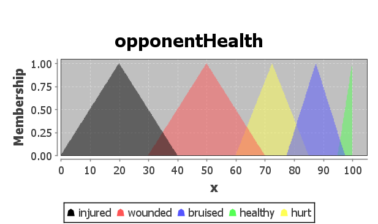
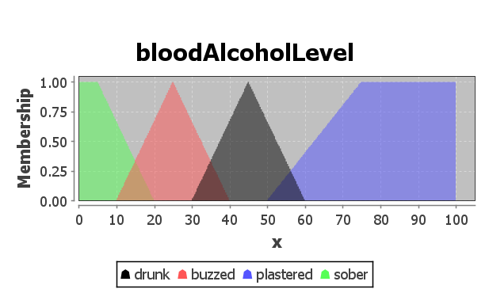
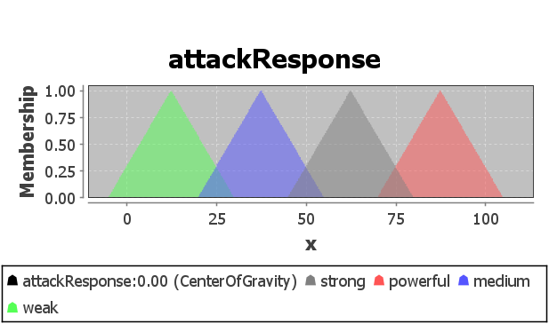
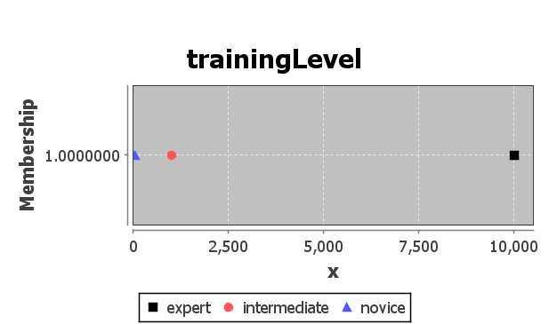
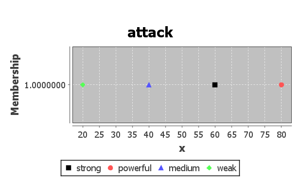
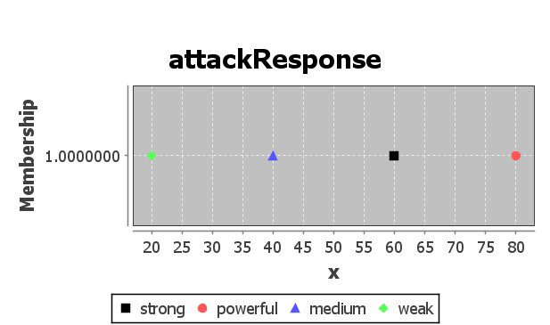

G00378925 - Declan Kelly
Fuzzy Logic
I have implemented 2 characters: Dragon and the Orc using Fuzzy Logic.
Both of the characters statically encapsulate the fis object.
Allowing multiple instances of the characters to share the same inference system.
The code for each of the characters can be found in the Dragon.java and Orc.java.
Like the characters that use the neural network, when you fight the character with a weapon, it calls the fight method of the enemy.
Some parameters are passed to the fis object, and the output being the attackResponse
is then deducted from the player's health.
1. Dragon
Type: Mamdani
FCL: ./resources/fuzzy/dragon.fcl
For the Dragon, I'm using Mamadani inference, as seen in the FCL file,
the defuzzification is using non-linear functions, being the triangular membership functions.
It will be taking in three outputs and emmitting one output.
The inputs are the following: attack, opponentHealth and bloodAlcoholLevel.
And the output being the attack response of the Dragon (attackResponse).
I am using the Center of Gravity (COG) defuzzifier, because its good at modelling nuanced relationships,
between the fuzzy sets.
Fuzzy sets and membership functions

The attack comes in four different tiers (weak, medium,
strong, powerful),
each tier of size 30 with an overlap of 5 allowing a gradual fade into the next tier.
The universe of discourse is -5 to 105.

This is the current health of the player, with 100 being top health and being close to 0 is near death.
Dragon's are kind creatures, and do not want unnecessary pain or suffering.
So the players health will be taken into account whilst determining the response attack.

The bloodAlcoholLevel is a measurement of drunkness of the Dragon,
each of the membership triangles overlap to model the transition between drunken states.
If the Dragon hasn't any alcohol

This fuzzy set is no different to the input attack,
this is the tier of attack the Dragon responds with.
Fuzzy rules
(* If the Dragon is plastered, the attack response will be weak no matter what. *)
(* Or if the player's health is injured, use a weak attack as well. *)
RULE 1 : IF bloodAlcoholLevel IS plastered OR opponentHealth IS injured
THEN attackResponse IS weak;
(* Being buzzed will make the Dragon significantly stronger. *)
(* Make sure the player isn't injured or bruised or hurt. *)
(* For strong and powerful attacks from the player. *)
RULE 2 : IF bloodAlcoholLevel IS buzzed AND attack IS strong OR attack IS powerful
AND opponentHealth IS NOT injured AND opponentHealth IS NOT bruised AND opponentHealth IS NOT hurt
THEN attackResponse IS powerful;
(* Being drunk will reduce the Dragon's performance slightly, only allowing medium attacks. *)
RULE 3 : IF bloodAlcoholLevel IS drunk AND attack IS strong OR attack IS powerful
AND opponentHealth IS NOT injured THEN attackResponse IS medium;
(* If the Dragon is sober and the attack is weak or the health is injured, use a weak attack. *)
RULE 4 : IF bloodAlcoholLevel IS sober AND attack IS weak OR opponentHealth IS injured
THEN attackResponse IS weak;
(* If the Dragon is sober and the attack is powerful, *)
(* then the response attack will be strong. *)
(* Dragon's need to be buzzed to unleash their full potential. *)
RULE 5 : IF bloodAlcoholLevel IS sober AND attack IS powerful
THEN attackResponse IS strong;
2. Orc
Type: Sugeno
FCL: ./resources/fuzzy/orc.fcl
For the Orc, I'm using Sugeno interference, as seen in the membership functions and the diagrams below,
they are all linear.
The inputs are the following: trainingLevel and attack.
And the output being the attack response of the Orc (attackResponse).
I am using the Center of Gravity Singleton (COGS) defuzzifier,
because it works best with linear membership functions, defined by a single point (Sugeno).
Fuzzy sets and membership functions

This fuzzy set is used to determine if the Orc is a novice (50 hours), intermediate or an expert at attacking.
With some practice in most crafts, an Orc can learn enough to be dangerous with some practice (1,000 hours) (intermediate),
but to be a true expert, you need 10,000 hours.
An observation I have made is that the lack of shapes such as triangles,
make it difficult to model the learning curve.
A gaussian might be more appropriate here, but I can't since I'm using Sugeno for the Orc.

This fuzzy set is very similar to the input attack in the Dragon above,
the difference being, its use of linear membership functions.

Fuzzy rules
(* If the Orc is a novice, then all their attacks will be weak, *)
(* no matter the attack of the player. *)
RULE 1 : IF trainingLevel IS novice THEN attackResponse IS weak;
(* If the player's attack is weak or medium and the Orc is an expert, *)
(* Use a medium response attack. *)
RULE 2 : IF attack IS weak OR attack IS medium AND
trainingLevel IS expert THEN attackResponse IS medium;
(* If the Orc is of intermediate level and the attack is medium, *)
(* send back a medium level of attack. *)
RULE 3 : IF trainingLevel IS intermediate AND attack IS medium
THEN attackResponse IS medium;
(* Same as above, but with strong. *)
RULE 4 : IF trainingLevel IS intermediate AND attack IS strong
THEN attackResponse IS strong;
(* If the Orc is an expert and the players attack powerful, respond with powerful. *)
RULE 5: IF trainingLevel IS expert AND attack IS powerful
THEN attackResponse IS powerful;